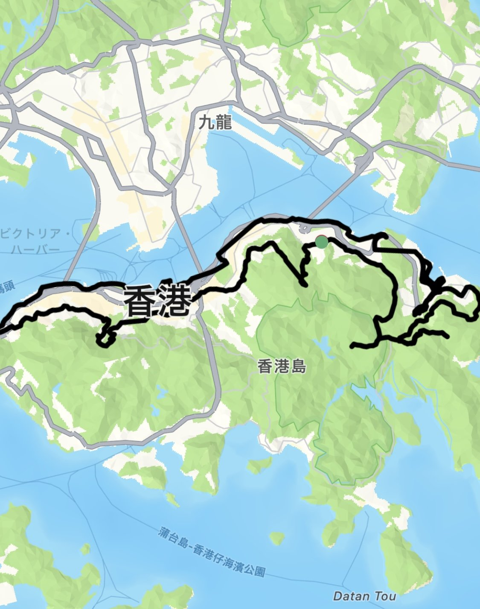

2018年、花蓮市大地震の際に復興応援メッセージをGPSアートで描いたことがきっかけで、 台湾全土に「老師直樹（なおき先生）」として知られるようになりました。 その後、花蓮市長との台日友好会見を実現。
2019年には自転車で台湾1周（約1,000km）を完走。 そして2023年、24日連続フルマラソンで台湾1周1,135kmを走破するという前人未到の挑戦を達成。 「阿部寛と渡辺直美の次に有名な日本人」としていじられるほどの知名度に。
「老師直樹（なおき先生）」として台湾全土に知られる存在に
2018年、花蓮市大地震の際に復興応援メッセージをGPSアートで描いたことがきっかけで、 台湾全土に「老師直樹（なおき先生）」として知られるようになりました。 その後、花蓮市長との台日友好会見を実現。
2019年には自転車で台湾1周（約1,000km）を完走。 そして2023年、24日連続フルマラソンで台湾1周1,135kmを走破するという前人未到の挑戦を達成。 「阿部寛と渡辺直美の次に有名な日本人」としていじられるほどの知名度に。
4,600kmの「アルパカの地上絵」── 世界が注目した大作
2024年、90日間かけてペルー全土を走り、4,600kmの巨大な「アルパカの地上絵」を制作。 3,000ドルの詐欺に遭ったり、砂漠で野宿したり、 過酷な冒険の末に完成させた壮大なGPSアートは、 EFE通信（スペイン）をはじめ7ヵ国のメディアでニュースとして報道されました。
9ヵ国を駆け巡ったGPSアート遠征
2019年9月〜10月、ヨーロッパを中心に世界9ヵ国でGPSランを敢行。 フランス・パリのベルサイユ宮殿周辺でミッキーマウスを描き、 ドイツではダース・ベイダーとヨーダの乾杯シーンを制作、 ポルトガルではクリスチアーノ・ロナウドの似顔絵を描くなど、 各国の文化にちなんだ作品を制作しました。
同年10月にはオーストリアにて、adidas Runtastic本社で200名を前にプレゼンテーションを実施。 全世界1.6億ユーザーの公式アプリのワールドアンバサダーとしての活動を世界に発信しました。
香港島を舞台にドラゴンを描く
2025年、香港を舞台に2作品を制作。 香港島の海岸線を活かしたルートでドラゴン（龍）を描き上げました。 アジアの活気あふれる都市を走りながら、 GPSアートの可能性をさらに広げる挑戦となりました。

海外でのGPSアートイベント・コラボレーションのご相談もお気軽にどうぞ。